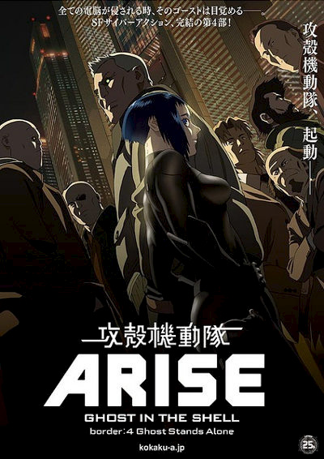

Home
Ghost?

- Name: Ghost in the shell
- Description: Ghost in the Shell (攻殻機動隊 Kōkaku
Kidōtai?, literally "Mobile Armored Riot Police") is a Japanese media
franchise originally published as a seinen manga series of the same
name written and illustrated by Masamune Shirow. The manga, first
serialized in 1989 under the subtitle of The Ghost in the Shell, and
later published as its own tankōbon volumes by Kodansha, told the
story of the fictional counter-cyberterrorist organization Public
Security Section 9, led by protagonist Major Motoko Kusanagi, in the
mid 21st century of Japan.
- Date: Since 1989